| Variable |
All
|
Men
|
Women
|
|||
|---|---|---|---|---|---|---|
| Mean | % Positive | Mean | % Positive | Mean | % Positive | |
| Earnings | 50,326 | 84.0 | 60,216 | 86.6 | 40,408 | 81.5 |
| Investment Income | 2,706 | 28.5 | 3,291 | 28.6 | 2,120 | 28.3 |
| Pension | 1,561 | 8.2 | 1,556 | 7.3 | 1,567 | 9.1 |
| Other Income | 2,069 | 17.7 | 1,926 | 16.0 | 2,212 | 19.4 |
| Government Transfers | 4,671 | 82.6 | 3,252 | 78.0 | 6,094 | 87.2 |
| Income Taxes | 11,012 | 72.8 | 14,191 | 77.2 | 7,824 | 68.5 |
| Annual Hours Worked | 1,385 | 82.0 | 1,546 | 85.6 | 1,223 | 78.4 |
| Wage | 40 | 75.6 | 44 | 78.4 | 36 | 72.9 |
Introduction to the Canadian Labour Market, Measurement, and Research
EC306- Wages and Employment
Justin Smith
Wilfrid Laurier University
Fall 2026

Goals of This Section
Goals of This Section
In this section we will:
- Compare labour market outcomes across countries and across Canada
- Review the legal and institutional context in which people and firms decide
- Define the key labour force concepts and the data we measure them with
- See how regression is used, and why correlation is not causation
- Introduce the research designs that let us estimate causal effects
Introducing the Canadian Labour Market
Comparing Labour Markets
- Labour economics has a strongly empirical tilt
- Comparing outcomes across regions tells us how differences in economic structure or policy matter for people’s well-being
- The first thing to describe is how attached people are to the labour market
- Do they participate in paid work, or spend time on unpaid work at home, retirement, volunteering, or school?
Key Definition
The labour force participation decision is whether to take part in paid labour market activity. The share of the population doing so is the participation rate.
Participation Across Countries
- There is huge variation across countries
- From about 41% in Jordan to 87% in Iceland
- Canada is relatively high at 80.3% in 2023 — nearly 7 points above the United States
- These comparisons cover ages 15–64, which is why they run well above the 15-and-over rates in our Canadian charts later
- Most of the cross-country variation comes from differences in women’s participation
- Countries with the largest gaps between men and women tend to have lower average incomes
- Though there are important exceptions
Participation and Economic Development
- Plotting participation against log national income per capita, participation generally rises with income for both men and women
- But there is far more variation among women across countries with similar income
- Mozambique and Madagascar are low-income with very high women’s participation
- The gender gap in Mozambique is only 1.1 percentage points
Note
The reasons are complex. We expect the availability of high-paying opportunities for women, and social norms around women’s paid work, to matter a great deal.
Participation and Economic Development
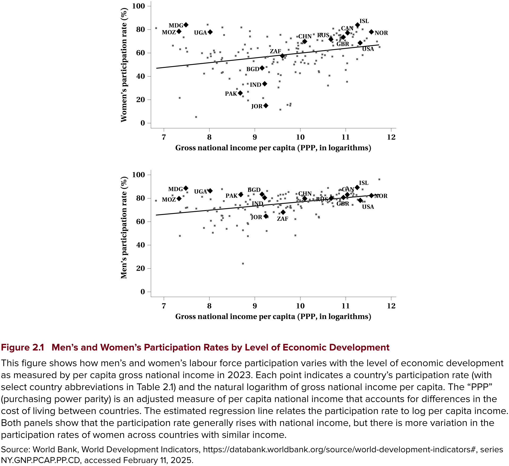
Differences Within Canada
- Nearly 21 million people were employed in Canada in 2024, unevenly distributed
- Ontario largest at about 8 million; Prince Edward Island smallest at 93,000
- Most people work in service industries — about 80% nationally
- Alberta is lower, because resource industries are a larger share of jobs
- Populations differ too: median age is highest in Newfoundland and Labrador, lowest in Manitoba
Both labour demand and supply differ by province, given who lives there.
Two More Indicators
Key Definitions
The job vacancy rate is the number of jobs that need to be filled, as a percentage of all jobs — occupied or vacant. It was 3.2% nationally in 2024, highest in British Columbia.
The union differential is the percentage difference between average weekly earnings of union and non-union employees. It was 7.3% nationally, but varies widely — over 30% in Prince Edward Island.
- We return to vacancies in Chapter 8 and to unions later in this section
iClicker Question
Across countries, most of the variation in overall labour force participation comes from differences in:
A) Men’s participation
B) Women’s participation
C) Retirement ages
D) Unemployment rates
E) Population size
Institutional and Legal Context
Introduction
- Before analyzing any market, we need the context in which people and firms decide
- Institutions and legislation shape the employer–employee relationship
- Rules do not just constrain behaviour — they change wages and employment
Canada and Indigenous Peoples
- Inuit, First Nations, and Métis Peoples have a special constitutional relationship with the Crown
- Including “existing aboriginal and treaty rights” under section 35 of the Constitution Act, 1982
- Laws and policies are being reviewed against the United Nations Declaration on the Rights of Indigenous Peoples
Tip
We look at contemporary effects of Canada’s historical policies in Chapter 15.
Canada and Indigenous Peoples
Which rules apply at work?
- Employment relationships follow the same legislation as everyone else, depending on industry
- Federal jurisdiction covers band councils and Indigenous self-governments
Taxation:
- Employment income may be tax exempt when the work is substantially “situated on a reserve” and done by a registered First Nations individual
- Section 87 of the Indian Act
Federal and Provincial Jurisdiction
- The British North America Act of 1867 divided power between the two levels of government
- Which government regulates your job depends on what industry you work in, not where you live
Federal jurisdiction covers the federal public service plus a short list of industries:
- Interprovincial and international transportation
- Telecommunications and broadcasting
- Banks — but not credit unions
- Postal and courier services
The provinces have everything else — the large majority of workers.
The Canada Labour Code
Key Definition
The Canada Labour Code (CLC) sets labour standards for industries under federal responsibility. It has four parts.
- Part I — Industrial Relations: collective bargaining and unionization
- Part II — Occupational Health and Safety
- Part III — Labour Standards: employment conditions and protections
- Part IV — Penalties and procedures for noncompliant employers
Not every part applies to every worker: federal private sector gets all four, the federal public sector only II and IV.
Provincial Employment Standards
- Each province has an Employment Standards Act or Code setting rules on:
- Minimum wages, vacation time, parental and sick leave
- Termination of employment, limits on hours
- We care because these rules change the decisions of workers and firms — and therefore wages and employment
Minimum Wages in Canada, September 2026
| Jurisdiction | Wage |
|---|---|
| Canada (federal) | $18.15 |
| Newfoundland and Labrador | $16.35 |
| Prince Edward Island | $17.00 |
| Nova Scotia | $16.75 |
| New Brunswick | $15.90 |
| Quebec | $16.60 |
| Ontario | $17.60 |
| Jurisdiction | Wage |
|---|---|
| Manitoba | $16.00 |
| Saskatchewan | $15.35 |
| Alberta | $15.00 |
| British Columbia | $18.25 |
| Nunavut | $20.17 |
| Northwest Territories | $17.20 |
| Yukon | $18.51 |
- Most jurisdictions now index annually — Ontario, Manitoba, Nova Scotia, and PEI all adjust on October 1, 2026, partway through this course
- Alberta has not changed since 2019, the longest freeze in the country
We analyze minimum wages properly in Chapter 12.
Labour Relations, Equity, and Human Rights
- A separate provincial Labour Relations Act governs forming a union, negotiations, and dispute resolution
- This helps explain differences across provinces in unionization rates
Employment Equity vs. Pay Equity
Employment equity removes barriers to employment for designated groups — women, Indigenous Peoples, persons with disabilities, and members of visible minorities.
Pay equity requires that women and men receive the same pay for work of equal value.
- The Canadian Human Rights Act protects against discrimination on grounds including race, religion, age, sex, sexual orientation, gender identity, disability, and family status
- Provinces have related legislation for workers outside the federal jurisdiction
iClicker Question
A teller at a credit union in Ontario is covered by:
A) The Canada Labour Code, because banking is federal
B) Ontario’s employment standards legislation, because credit unions are provincial
C) Both, equally
D) Neither
E) Whichever the employer chooses to register under
Quantifying the Canadian Labour Market
Types of Data
Labour economists catalogue data by the unit of observation.
- Aggregate (time-series) — economy-wide measures like the unemployment rate, inflation, or GDP, reported over time
- Cross-section microdata — earnings, hours, or education at the individual level at one point in time
- Panel (longitudinal) — the same individuals followed over several periods
Why Panel Data Matter
- Panel data let us study dynamics — transitions into and out of the labour market
- They also let us control for things we normally cannot observe but that are fixed within a person, like motivation
- Few Canadian surveys are longitudinal, and access is restricted for privacy
- The Longitudinal Administrative Database follows income through tax records
- The Canadian Employer–Employee Dynamics Database links firms to their workers
Note
Increasingly researchers combine sources, including “big data” like online job ads and text analysis of media reports.
Where the Numbers Come From
- The Labour Force Survey (LFS) measures all of the concepts above
- Monthly, about 68,000 households and 100,000 individuals aged 15+
- Its main purpose is the official unemployment rate used to administer EI
- Coverage excludes reserves and extremely remote areas
- The Census runs every five years — most recently in May 2026
- Adds characteristics the LFS does not have: ethnicity, language, country of birth
- The Canadian Income Survey (CIS) is annual, with much more detail on earnings and family circumstances
Where the Numbers Come From
- Two employer-side surveys matter too:
- SEPH — jobs, earnings, and hours within industries
- Job Vacancy and Wage Survey — vacancies by occupation
Finding the data yourself
Three routes are open to students: Statistics Canada PUMFs, the Data Liberation Initiative through your library, and the Research Data Centres for confidential files.
We use the CIS later in this section, and you will work with this kind of data yourself.
Key Definitions: The Labour Force
Important
Labour Force (LF): people in the eligible population who participate in labour market activities, as either employed or unemployed
Labour Force Participation Rate (LFPR): the share of the eligible population in the labour force
\[LFPR = LF/POP\]
Eligible population (POP)
- Aged 15 and over
- Non-institutionalized
- Not living on reserve
- Civilians
Not in the labour force
- Retired people
- Unpaid work in the home
- Full-time students
- People who gave up looking
Key Definitions: Employment and Unemployment
People in the labour force are either employed or unemployed.
Important
Employed (E): worked during the reference period — including those normally employed but temporarily absent
Unemployed (U): did not work, but were available and actively looked in the past four weeks, are waiting to start a job within four weeks, or are on temporary layoff expecting recall
\[ER = E/POP \qquad UR = U/LF\]
- Economists split the choice in two: the extensive margin is whether to work at all, the intensive margin is how many hours once you do
- We measure the intensive margin with hours worked — full time or part time
The Labour Force Hierarchy
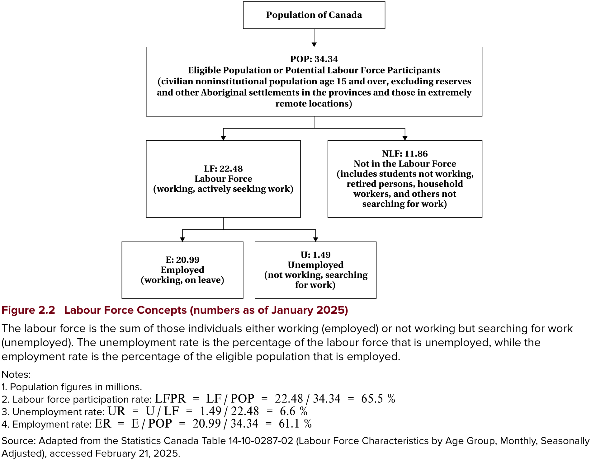
iClicker Question
A 22-year-old full-time student who is not looking for work is counted as:
A) Employed
B) Unemployed
C) In the labour force, but not employed
D) Not in the labour force
E) Outside the eligible population
iClicker Question
In January 2025 the eligible population was 34.34 million, the labour force 22.48 million, employment 20.99 million, and unemployment 1.49 million. What was the unemployment rate?
A) 4.3%
B) 6.6%
C) 61.1%
D) 65.5%
E) 93.4%
What the Data Look Like
With the concepts and the sources in hand, let’s look at real Canadian data.
- First the Labour Force Survey — how participation, employment, unemployment, and hours have moved over time
- Then the Canadian Income Survey — where income comes from, and how earnings differ across people
Note
None of this is causal — these are descriptions. They are the facts the rest of the course sets out to explain.
A Century of Participation
- The census lets us push the participation story back to 1901
- Men’s participation has drifted down the whole century — from just over 90% to about 70% by 2024
- Women’s participation was below 30% as recently as 1961, then rose sharply before levelling out in the 2000s at around 61%
- The rise of women’s participation is one of the biggest changes in the Canadian labour market on record
- Candidate explanations — wages, education, contraception, social attitudes, life expectancy — are questions this course comes back to
A Century of Participation
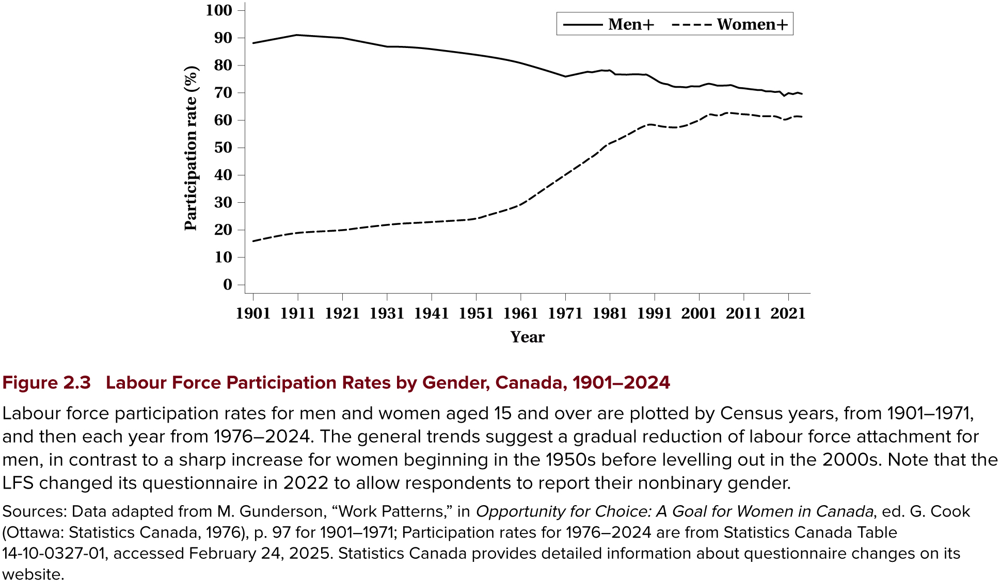
Labour Force Participation Rate, Canada
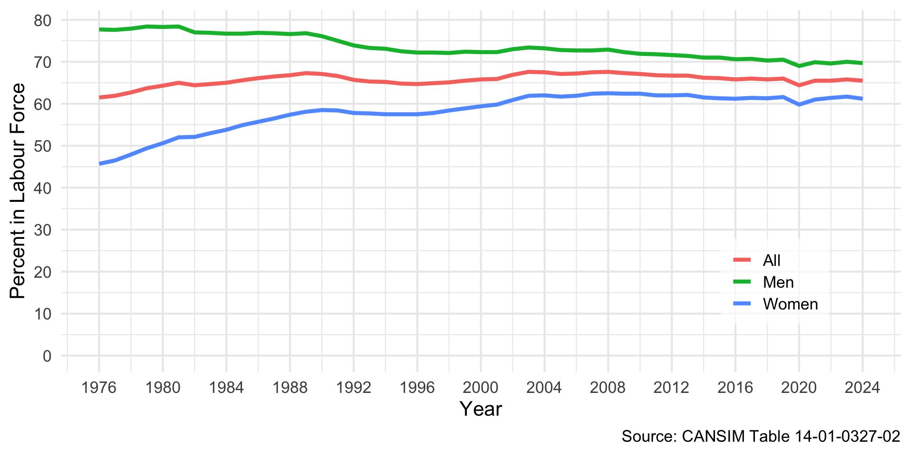
iClicker Question
Which statistic is the best proxy for the demand side of the labour market?
A) The participation rate
B) The job vacancy rate
C) The employment rate
D) The unemployment rate
E) The size of the eligible population
Employment Rate, Canada
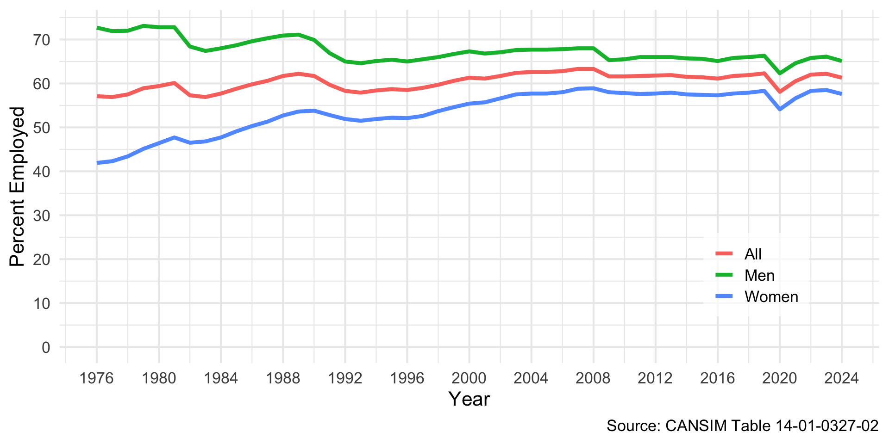
Unemployment Rate, Canada
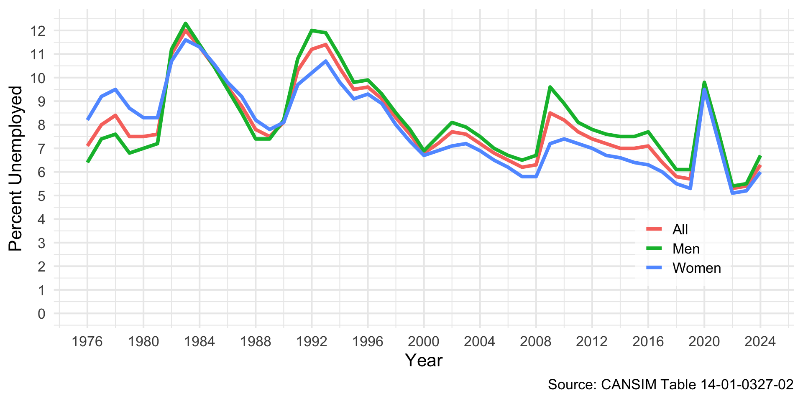
iClicker Question
Someone who has been unemployed for a year stops looking for work. Holding everything else constant, what happens to the measured statistics?
A) The unemployment rate rises; the participation rate is unchanged
B) The unemployment rate falls; the participation rate falls
C) The unemployment rate falls; the participation rate is unchanged
D) Neither changes, because the person is still jobless
E) The unemployment rate rises; the participation rate falls
Discouraged Workers and Hidden Unemployment
Key Definitions
Discouraged workers: people who want a job but have stopped searching because they believe no work is available
Hidden unemployment: joblessness the unemployment rate misses, because non-searchers are counted as outside the labour force
- The previous question is exactly this mechanism — discouragement makes the unemployment rate look better as the labour market gets worse
- People who want work but are not searching have marginal labour force attachment
- Jones and Riddell (1999) find they behave more like the unemployed than like others outside the labour force
- So “unemployed” versus “not in the labour force” is a measurement line, not a bright line in behaviour
Usual Weekly Hours: Men vs Women
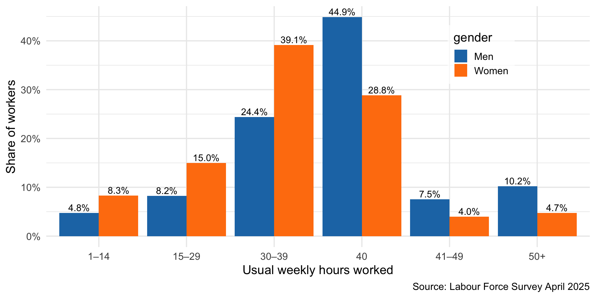
Income Sources
Distribution of Earnings
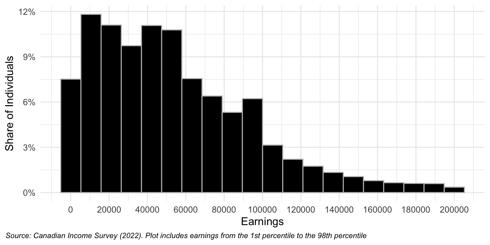
Distribution of Annual Hours Worked
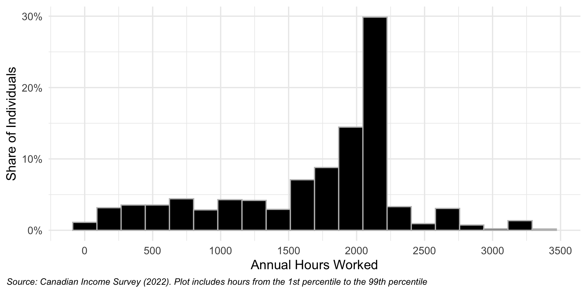
Distribution of Hourly Earnings
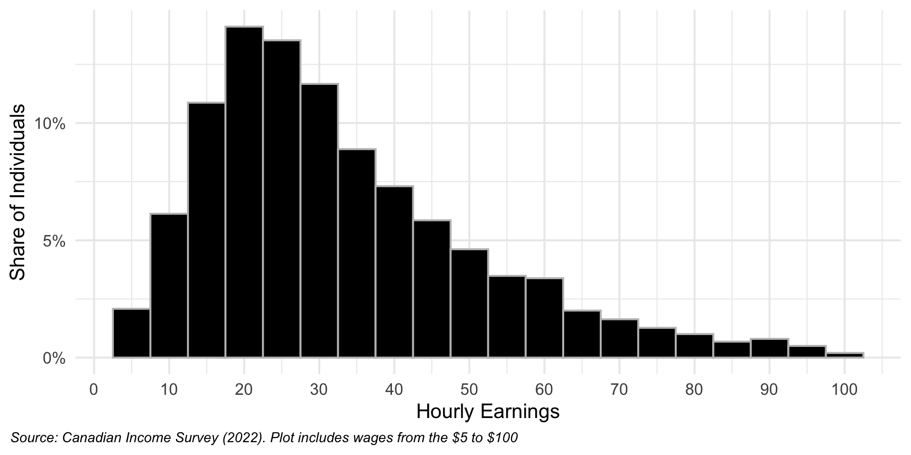
Earnings by Highest Level of Schooling
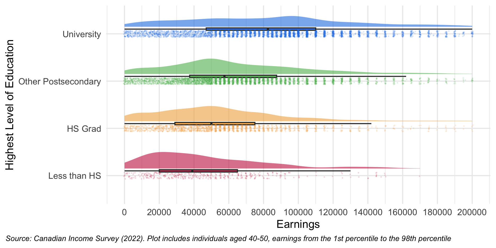
Earnings by Gender
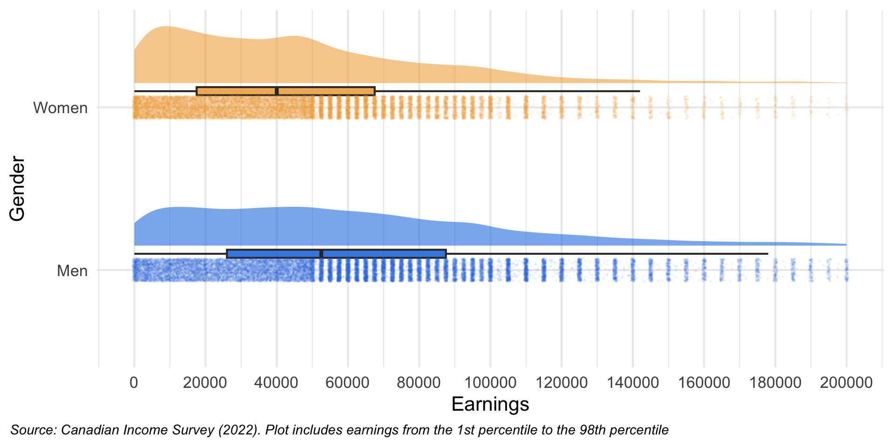
Earnings by Immigration Status
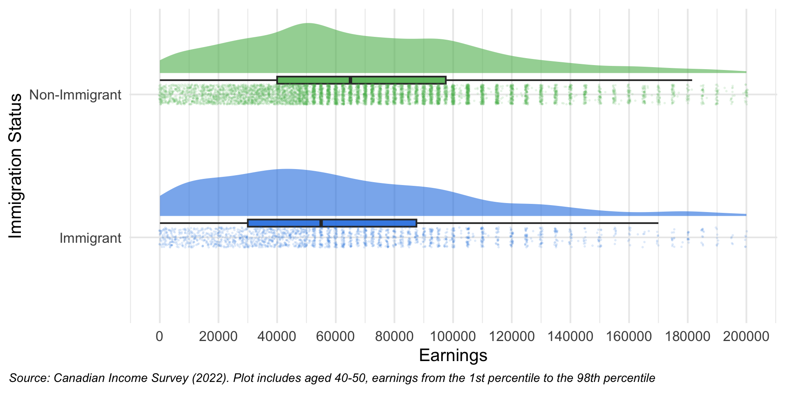
iClicker Question
The charts show men earning more than women on average. Based on these data alone, we can conclude:
A) Discrimination causes the gap
B) Women choose lower-paying occupations
C) The gap is real, but these data cannot tell us why
D) The gap is fully explained by differences in hours worked
E) There is no meaningful gap
Empirical Research
Correlation
Key Definition
The correlation coefficient describes the relationship between two variables, ranging from \(-1\) to \(1\).
- Close to 1: strong positive · 0: none · close to -1: strong negative
- Across countries, participation and log national income correlate at 0.28 for women and 0.41 for men
Regression Analysis
- Regression fits the line that best fits the data, rather than eyeballing it
\[\text{Participation rate} = a + b \times \ln(GNI) + e\]
- Ordinary least squares chooses the line minimizing the sum of squared residuals
- Estimating across 168 countries gives a slope of 4.12 for women
- A one unit increase in log income is associated with a 4.12 percentage point higher participation rate
- R-squared measures goodness of fit — income explains only 7.85% of the variation in women’s participation
- Every estimate comes with a standard error measuring its precision
- Rule of thumb: a coefficient at least twice its standard error is statistically significant — unlikely to be zero
Multiple Regression
- We can add more variables. For the union wage differential:
\[\text{Weekly Earnings} = a + b\,\text{Unionized} + e\]
- Adding controls for education, gender, age, and industry shrinks the differential
- Adding job tenure shrinks it further — even negative in some provinces
Warning
But if a main role of unions is job security — letting people stay in higher-paying jobs — then controlling for tenure understates how much unions matter. Be careful what you control for.
Correlation versus Causation
- The number of movies Margot Robbie appears in correlates with the number of firefighters in South Dakota
- The divorce rate in Maine correlates with margarine consumption in the United States
Key Definition
These are spurious correlations. A strong correlation does not mean one variable is causing changes in the other.
- We usually want causal relationships, not just associations — which is what the next section is about
iClicker Question
Adding job tenure as a control shrinks the estimated union wage differential. Why should we be cautious?
A) Job tenure is measured with error
B) If unions raise wages partly by increasing job security, controlling for tenure removes part of the effect
C) Job tenure is unrelated to earnings
D) Adding more controls always biases estimates downward
E) The sample becomes too small
Advanced Research Design in Labour Economics
The Fundamental Problem
- University graduates earn more (Chapter 14) — but is that causal?
- Perhaps they already had marketable skills that would have raised their wages anyway
- We suspect confounding factors driving both wages and schooling
Key Definition
The counterfactual outcome is what would have happened to the treated had they not received the intervention. We can never observe it.
The Fundamental Problem
You injure your ankle, your doctor prescribes physiotherapy, and six weeks later it is healed.
Did the physiotherapy cause it to heal? Or would it have healed anyway?
- You cannot answer this, because you cannot observe the healing that would have happened without treatment
- Research designs are strategies for estimating that missing counterfactual
Why bother?
To design policy that addresses causes rather than symptoms, to predict what happens when conditions change, and to anticipate unintended consequences.
Experimental Methods
Key Definition
Random assignment to treatment and control groups. The gold standard.
- We simply compare the mean outcomes of the two groups
- Easy to explain to, and be understood by, policymakers and the public
- Everything else is nonexperimental, using observational data
Tip
In 2021 the Canadian labour economist David Card won the Nobel Prize for his empirical contributions to labour economics, sharing it with Joshua Angrist and Guido Imbens for their work on analyzing causal relationships.
Audit and Resumé Studies
Key Definition
Audit studies approximate random assignment by comparing outcomes where the treatment is manipulated or hidden.
- Resumé studies submit artificially manipulated resumés to real job ads and record which get call backs
- Resumés are varied to signal demographic differences — common foreign versus domestic names, volunteer work signalling child care responsibilities, activities signalling sexual orientation
Several examples appear in Chapter 15.
Simple Comparisons and Their Problems
Before-and-after comparison of those treated
- Compares the treated before and after; needs longitudinal data
- Assumes pre-treatment outcomes estimate the counterfactual — often unconvincing
- Some unemployed workers would have found jobs without a job search program
Post-treatment comparison of treated and comparison groups
- Compares the treated to a similar untreated group; needs only cross-section data
- But with no pre-treatment data, existing differences between the groups bias the estimate
Difference-in-Differences
Key Definition
Take both groups, before and after. Contrast each group’s change over time; the difference in those two differences estimates the causal effect.
- This fixes the main limitations of both simpler designs
- The comparison group’s change over time estimates the counterfactual
Tip
We use this twice: Maine vs New Brunswick in Chapter 5, and Card and Krueger in Chapter 12.
Selection Bias and Natural Experiments
The main threat
Selection bias — unobserved factors that determine who gets treated and affect the outcome. Regression cannot control for what you cannot see.
- Training program participants chose to apply, perhaps because of motivation the researcher never observes
Key Definition
A natural experiment arises when an event — a policy change, a disaster — affects some people and not others, for reasons unrelated to the treatment of interest.
- Because nobody chose to be affected, selection bias is much less of a problem
Discontinuities and Instruments
Regression discontinuity design
When treatment depends on a score crossing a threshold, compare those just above and just below. A student scoring 92 and one scoring 91 are otherwise nearly identical — the jump at the threshold estimates the effect.
Instrumental variables
Find an instrument that shifts the treatment exogenously but does not affect the outcome directly — the exclusion restriction. Compulsory schooling laws instrument for education in Chapter 14.
Building a Comparison Group
Fixed effects
Panel data let us use only the changes a given individual makes, differencing out anything fixed within them — motivation, ability. The twin studies in Chapter 14 work this way.
Matching and propensity scores
Construct a control group that looks like the treated. The propensity score is each person’s estimated probability of being treated; match treated and untreated people with the same score.
Synthetic comparison groups
With one treated group and several imperfect candidates, build a weighted comparison group matching the treated group’s pre-treatment path.
Research Designs: Summary
| Design | Main worry |
|---|---|
| Audit / resumé studies | External validity |
| Before-and-after | No counterfactual |
| Post-treatment comparison | Pre-existing differences |
| Difference-in-differences | Selection bias |
| Natural experiment | Is the event really exogenous? |
| Regression discontinuity | Effects only near the cut-off |
| Instrumental variables | Exclusion restriction |
| Fixed effects | Only handles fixed unobservables |
| Matching / propensity score | Unobservables remain |
| Synthetic comparison | Pre-treatment fit |
iClicker Question
You have earnings before and after a new training program, for participants and for a comparable group of non-participants. Which design does this support?
A) A randomized experiment
B) Before-and-after comparison of those treated
C) Difference-in-differences
D) A regression discontinuity design
E) Instrumental variables
Summary
Summary
- Participation varies enormously across countries, and most of that variation is in women’s participation
- Which employment law applies to you depends on your employer’s industry, not where you live
- The LFS, Census, and CIS are the workhorses; the LFS defines every unemployment number you hear
- A regression coefficient is not automatically a causal effect
- Estimating a causal effect means estimating a counterfactual we can never observe — every research design is a different way of building one
When you see evidence in this course, ask what the comparison group is, and whether you believe it.